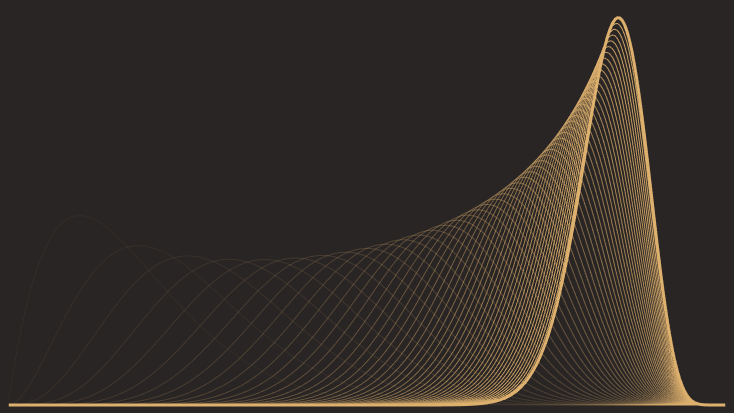
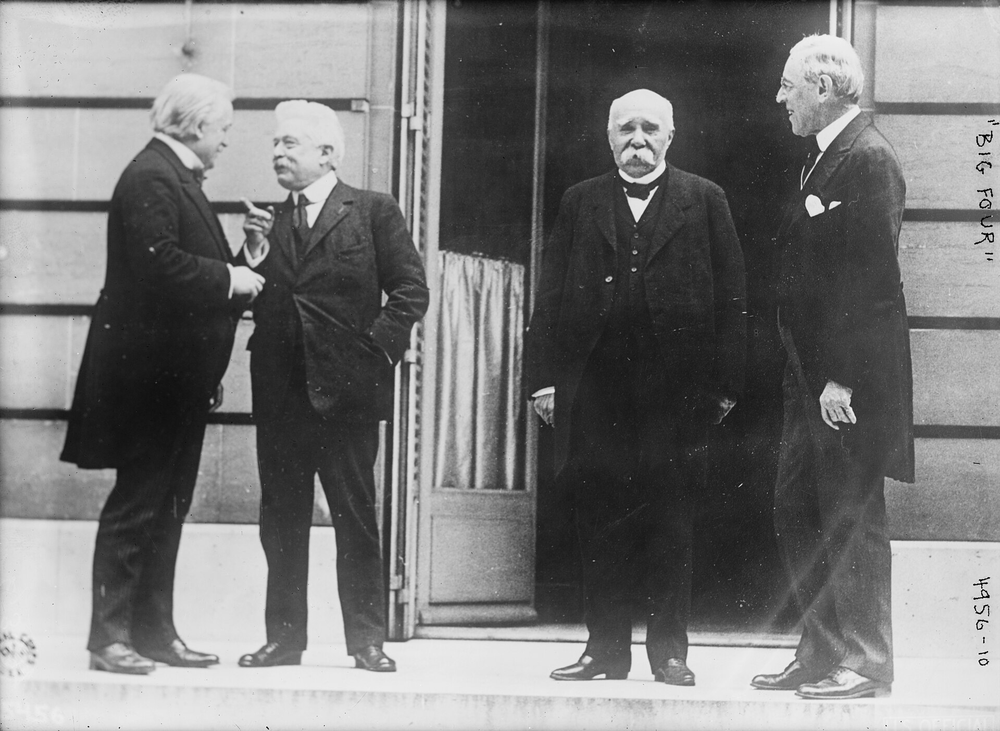
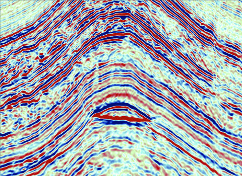

dorschblog
About
Posts
Categories
All
(18)
AI
(6)
LDI
(4)
coding
(7)
data
(4)
finance
(1)
geology
(2)
geophysics
(2)
opinion
(4)
statistics
(9)
stupid
(1)
updates
(1)

Bayes in Business and Engineering
statistics
I now consider myself a software engineer, but my journey into programming started with an interest in probability and uncertainty.
May 31, 2026
Nicholas Dorsch
Resgo
Prospect evaluation end-to-end
LDI
geology
geophysics
statistics
This post is a demonstration of the Resgo probabilistic prospect evaluation toolkit, and my motivations for building it.
May 29, 2026
Nicholas Dorsch

The Lindy Effect
What do we learn from the test of time?
statistics
The Lindy effect states that the future longevity of something is roughly proportional to its current age. The more time something has
been
around, the more time it will
stick
…
May 17, 2026
Nicholas Dorsch
Be careful what you vibe for
AI
opinion
I’m on the AI software development train like everyone else. I can’t deny the productivity boost—it’s too dramatic, too undeniable at this point to avoid—but a whole raft of…
May 12, 2026
Nicholas Dorsch
What do I mean by “Informatics”?
Making your data pay rent
data
AI
LDI
Inform
, from the Latin
informare
: to give form to the mind.
May 11, 2026
Nicholas Dorsch
The New Shape of Work
Field notes from my couch
data
AI
opinion
I’ve been thinking a lot about how fundamentally the way I work has changed in the last six months, and how starting a company and being my own boss has made it possible.
May 9, 2026
Nicholas Dorsch
The DataBasin
A digital transformation bootstrapping system for the oil and gas sector
LDI
data
AI
“Structured data is the foundation of trustworthy AI.”
Apr 23, 2026
Nicholas Dorsch

Some Thoughts on DHIs
statistics
geophysics
Direct Hydrocarbon Indicators (DHIs) are anomalous seismic amplitudes driven by the presence of hydrocarbons in rock. In the best case they create structurally conformant…
Apr 14, 2026
Nicholas Dorsch
enso: Streamlining Petroleum Data Management with Graphs and GIS
LDI
data
AI
In my previous post I waxed lyrical/incoherently rambled about the benefits of relational databases and good data modelling, comparing it to the pains I’ve experienced doing…
Mar 23, 2026
Nicholas Dorsch
… Show me the spreadsheet
coding
opinion
Something my career has taught me so far is that in this industry, behind most important data is an Excel spreadsheet that everyone is afraid of.
Mar 18, 2026
Nicholas Dorsch
Open Source AI is Ready for Real Work
coding
AI
A big thank you to Chris and Ant from Zai Node for providing API access to their Australian hosted, private GPU cluster for this project.
Mar 10, 2026
Nicholas Dorsch
Berkson’s Boardroom
\(X \rightarrow \text{YOU} \leftarrow Y\)
opinion
statistics
You wake up, face down on a boardroom table. There’s an intercom by your face.
Jun 26, 2025
Nicholas Dorsch
How Much is a Coffee Worth to Me?
A masochistic exploration of personal finance
stupid
finance
coding
I moved to Melbourne last year, which, along with being a questionable career choice, turned an already troubling dependence on caffeine into a behavioural disorder.
Jun 21, 2025
Nicholas Dorsch
Interpreting Depositional Environments with Bayes
Modelling interpretation uncertainty with the Dirichlet distribution
coding
statistics
geology
The image above depicts a Bouma sequence, which to the untrained eye, is… some tilted mud. To the trained eye however, it is a dead giveaway that the sediment was deposited…
Jun 7, 2025
Nicholas Dorsch
Amy, Brett and the Cost of Living Crisis
A Zero-Inflated Model of Household Spending
coding
statistics
To make the processes outlined in the previous two posts more concrete, the following is the story of a young couple trying to manage a household budget. I’ll use an…
Jun 2, 2025
Nicholas Dorsch
Correlated Outcomes
coding
statistics
In the previous post I explained how Copulas can be used to sample distributions with correlation. A nice extention of that logic is to simulate
discrete outcomes
with…
Jun 1, 2025
Nicholas Dorsch
Correlated Sampling Made Easy
coding
statistics
A common “gotcha” with creating simple Monte Carlo scripts in Python or Excel is the request to add correlation to the distributions being sampled. This is a difficult thing…
May 31, 2025
Nicholas Dorsch
What is this blog for?
updates
I’m making this blog to better organize my thoughts, my work portfolio and to develop my writing skills, mostly through technical sharing. It will probably contain writing…
May 28, 2025
Nicholas Dorsch
No matching items